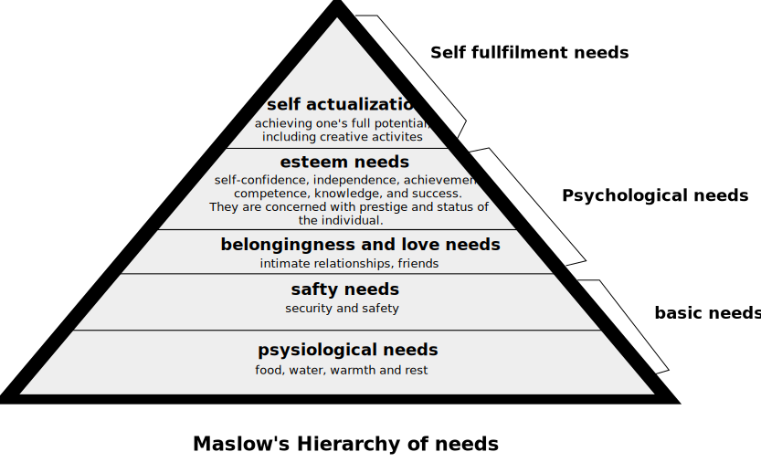

Motivational Theories
Theory X and Theory Y
- In 1960s, Douglas McGregor proposed two theories related to employee motivation and management. His
theories divided employees into two categories.
- Theory X employees avoid work and dislike responsibility. In order to motivate them, employers need
to enforce rules and implement punishments.
- Theory Y employees enjoy putting forth effort at work when they have control over opportunities for
employees to take on responsibility and show creativity as a way of motivating theory Y employees.
- A third theory, Theory Z was developed which encourages group work and social interaction to
motivate employees in the workplace.
Maslow's Hierarchy of needs
- It contains five levels that often shape motivation styles in an organization.
- To motivate employees, an organization must move up the pyramid of needs to ensure all of an
employee's needs are met.
- the bottom of pyramid contains physiological needs such as food, sleep and shelter. Safety makes up
the second level and belonging the third.
- The top two levels of the pyramid include esteem and self-actualization. Successful organizations
focus on the top two levels of the pyramid by providing employees wih the necessary recognition and
developing opportunities for employees to feel they are doing valuable work and reaching their
potential with the company.
